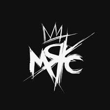

Marie Curie Rock Club (MCRC): "điểm đến của những rocker cá tính"
Hoạt động chính:
Biểu diễn live cover các ca khúc rock nổi tiếng (cả Việt Nam và quốc tế)
- My Chemical Romance ("Welcome to the Black Parade", "Teenagers")
- Sum 41 ("Still Waiting")
- Slipknot ("Nero Forte")
- Bức Tường ("Ra Khơi")
- Các ban nhạc như Flawed Mangoes, Tokyo Shoegazer, Motionless in White, v.v.
- - Tổ chức và tham gia sự kiện/show diễn, nổi bật là chuỗi BLACK PARADE (ví dụ: BLACK PARADE 3: NHÒA) tại các địa điểm như Polygon Musik (Hà Nội), nơi họ làm chủ sự kiện hoặc biểu diễn cùng các ban nhạc khác. Tham gia các festival rock như Thăng Long Mosh Fest.
Thông tin liên hệ:
- Facebook: facebook.com/mariecurierockclub
- YouTube: www.youtube.com/@MarieCurieRockClub
- Instagram: @mariecurierockclub
- Email: mariecurierockclub@gmail.com